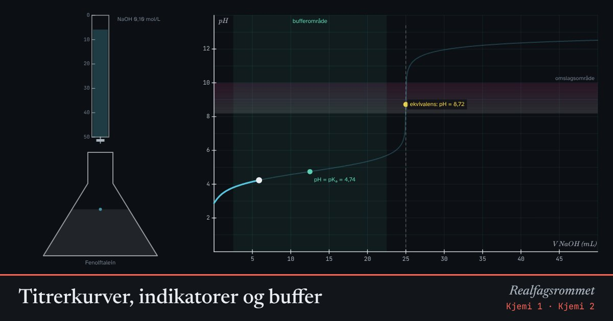

Titrerkurver, indikatorer og buffer
Vi drypper 0,10 mol/L NaOH ned i 25 mL syre. pH endrer seg sakte, helt til nesten all syren er nøytralisert. Da kommer et bratt sprang rundt ekvivalenspunktet.
Start animasjonen
Formler
Om animasjonen
Ved ekvivalenspunktet er stoffmengden base lik stoffmengden syre. For en sterk syre er pH da 7. For eddiksyre er pH over 7, fordi acetationet er en svak base.
For den svake syren dannes en buffer av eddiksyre og acetat. I bufferområdet (turkis) endrer pH seg lite selv om vi tilsetter base.
Halvveis til ekvivalens er det like mye syre som korresponderende base. Da er pH lik p = 4,74.
En god indikator skifter farge innenfor det bratte spranget. Prøv metyloransje på eddiksyre og se hvorfor den er et dårlig valg.
Prøv dette
- Hvor mange mL NaOH trengs for å nå ekvivalens? Vis ved regning.
- Hvorfor passer fenolftalein for eddiksyre, men ikke metyloransje?
- Les av pKₐ for eddiksyre fra kurven.
- Hva er en buffer, og hvorfor er blod en buffer?
Kompetansemål
- Kjemi 1: Titreranalyse
- Kjemi 2: pH i vannløsninger og buffere